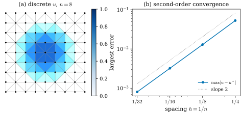

36.6 Composing Operators
Goals
- \(d_0, d_1\)과 \(\star_0, \star_1, \star_2\)를 이어 gradient, curl, divergence를 만들고, 각각이 무엇을 정확히 재는지 말할 수 있다.
- discrete codifferential \(\star^{-1}d^{\mathsf T}\star\)를 정의하고, 그것이 \(\star\)-inner product에 대한 \(d\)의 adjoint임을 증명할 수 있다.
- cotan Laplacian \(L = -d_0^{\mathsf T}\star_1d_0\)를 정의하고 성분을 계산하며, Delaunay mesh에서 \(-L\)이 positive semidefinite임을 증명할 수 있다.
- 평면 grid에서 Poisson 문제를 \(Lu = \star_0f\)로 풀 수 있다.
Prerequisites
- Definition 36.4.1, Theorem 36.4.7: \(d_0, d_1\)과 \(R\circ d = d\circ R\)
- Proposition 36.5.5: \(\tilde d_0 = d_1^{\mathsf T}\), \(\tilde d_1 = -d_0^{\mathsf T}\), Definition 36.5.14, Theorem 36.5.10, Theorem 36.5.16: diagonal Hodge star
- Proposition 35.2.12: \(\divg X = \star d\star X^\flat\), \(\Delta f = \star d\star df\)
- Definition 35.5.6, Theorem 35.5.8: codifferential \(d^*\)와 \(d^*df = -\Delta f\)
Motivation
Section 36.5까지 기본 부품이 모두 모였다. metric 없이 정확한 \(d_0, d_1\)(그리고 dual 쪽의 \(\tilde d_0, \tilde d_1\))과, metric을 모두 담은 대각 행렬 \(\star_0, \star_1, \star_2\)다. smooth 세계에서 vector calculus의 연산은 \(d\)와 \(\star\)의 합성이었다: 평면에서 \(\divg X = \star d\star X^\flat\), \(\Delta f = \star d\star df\)(Proposition 35.2.12), \(d^* = -\star d\star\)(Theorem 35.5.8). mesh 위에서는 각 기호를 행렬로 바꾸면 된다. 남은 일은 화살표를 올바른 순서와 부호로 잇고, 결과가 무엇을 재는지 확인하는 것이다. 그 대표가 cotan Laplacian이다. Chapter 31은 이 행렬을 Dirichlet energy에서 얻었고(Definition 31.3.3), 이 절은 같은 행렬을 \(d\)와 \(\star\)의 합성으로 정의한다.
The Operator Table
2차원 mesh 위의 기본 연산을 모으면 다음과 같다. 행렬의 크기는 (출력) \(\times\) (입력)이다.
| matrix | size | from | to | defined in |
|---|---|---|---|---|
| \(d_0\) | \(n_1\times n_0\) | primal 0-forms | primal 1-forms | Definition 36.4.1 |
| \(d_1\) | \(n_2\times n_1\) | primal 1-forms | primal 2-forms | Definition 36.4.1 |
| \(\tilde d_0 = d_1^{\mathsf T}\) | \(n_1\times n_2\) | dual 0-forms | dual 1-forms | Proposition 36.5.5 |
| \(\tilde d_1 = -d_0^{\mathsf T}\) | \(n_0\times n_1\) | dual 1-forms | dual 2-forms | Proposition 36.5.5 |
| \(\star_k\) | \(n_k\times n_k\) | primal \(k\)-forms | dual \((2-k)\)-forms | Definition 36.5.14 |
| \(\star_k^{-1}\) | \(n_k\times n_k\) | dual \((2-k)\)-forms | primal \(k\)-forms | 대각 성분이 모두 \(0\)이 아닐 때 |
이 표의 화살표를 잇는 것이 Figure 36.6.1이다. smooth 식의 각 기호를 차례로 대응시키면 된다. 다만 \(\star\)는 primal에서 dual로(또는 반대로) 건너가는 일이므로, 식에서 \(\star\)가 나올 때마다 지금 primal 쪽에 있는지 dual 쪽에 있는지에 따라 \(\star_k\)와 \(\star_k^{-1}\) 중 맞는 것을 고른다.
![두 개의 도식을 위아래로 놓았다. 각 도식에서 위 줄은 파란 상자 ℝ^{n0}(vertices), ℝ^{n1}(edges), ℝ^{n2}(faces)가 d0, d1 회색 화살표로 이어지고, 아래 줄은 주황 상자 ℝ^{n0}(dual cells), ℝ^{n1}(dual edges), ℝ^{n2}(dual vertices)가 오른쪽에서 왼쪽으로 d̃0, d̃1 화살표로 이어진다. 위아래 상자 사이에 ⋆k(아래로)와 ⋆k^{-1}(위로) 회색 화살표가 있다. (a) 제목 Laplacian: Δ ≈ ⋆0⁻¹ d̃1 ⋆1 d0 = ⋆0⁻¹ L. 파란 굵은 path가 vertices에서 위쪽 d0로 edges로, edges 오른쪽에서 ⋆1으로 dual edges로, 아래쪽 d̃1 = −d0^T로 dual cells로, 왼쪽 ⋆0⁻¹로 다시 vertices로 돌아오는 loop를 이룬다. (b) 제목 divergence and curl of a primal 1-form. 주황 path는 edges에서 ⋆1로 내려가 d̃1로 왼쪽으로 가서 ⋆0⁻¹로 vertices에 올라가고, 아래에 div ≈ ⋆0⁻¹ d̃1 ⋆1 = −d1*이라 적혀 있다. 초록 path는 edges에서 위쪽으로 d1을 지나 faces로 가서 ⋆2로 dual vertices에 내려가고, 위에 curl ≈ ⋆2 d1이라 적혀 있다.](figures/fig-36-6-1-compositions.svg)
Figure 36.6.1의 (a)에서 파란 loop를 따라가 보자. vertex 값 \(u\)에 \(d_0\)를 곱하면 edge를 따른 차이(gradient의 적분)가 되고, \(\star_1\)로 dual edge를 가로지르는 flux로 바꾸며, \(\tilde d_1\)로 각 dual cell의 둘레를 빠져나가는 flux를 모으고, \(\star_0^{-1}\)로 dual cell의 넓이로 나누어 vertex의 밀도로 돌아온다. 이것은 “Laplacian = gradient의 divergence”를 그대로 따라간 것이고, 각 단계가 smooth 식 \(\Delta = \star d\star d\)의 한 기호다. (b)의 주황 path는 그 loop의 뒷부분이고, 초록 path는 face를 도는 circulation을 넓이로 나눈 것이다.
Proposition 36.6.1 (gradient, curl, and divergence). \(\R^2\)의 반시계 방향 mesh와 circumcentric dual에서, mesh를 포함하는 open set \(U\) 위의 smooth 함수 \(u\)와 vector field \(X\)(\(\alpha = X^\flat\))에 대하여
- (a) (gradient) \(d_0R_0u = R_1(du)\), 곧 \((d_0R_0u)_e = \int_e\inner{\grad u}{t}\,ds\)이다.
- (b) (curl) \((\star_2d_1R_1\alpha)_f = \dfrac{1}{\abs{f}}\int_f(\partial_xX^2 - \partial_yX^1)\,dA\), 곧 face 위의 curl의 평균이다.
- (c) (divergence) \((\tilde d_1\star_1R_1\alpha)_i\)는 dual edge마다 추정한 flux를 \(\partial i^\star\)를 따라 바깥 방향으로 더한 것이다. \(X\)가 상수이면 모든 interior vertex에서 \(0\)(\(= \divg X\))이다. 따라서 \(\star_0^{-1}\tilde d_1\star_1 = -\star_0^{-1}d_0^{\mathsf T}\star_1\)이 divergence의 근사다.
Proof. (a) Theorem 36.4.7이다. (b) Theorem 36.4.7에서 \(d_1R_1\alpha = R_2(d\alpha)\)이고 \(d\alpha = (\partial_xX^2 - \partial_yX^1)\,dx\wedge dy\)(Proposition 35.2.8, 평면판)이며, \(\star_2\)는 \(1/\abs{f}\)를 곱한다. (c) Proposition 36.5.5의 증명에서 \((\tilde d_1\beta)_i = \sum_e\varepsilon(i, e)\beta_e\)이고 \(\varepsilon\)는 \(e^\star\)가 \(\partial i^\star\)의 방향(반시계)과 같으면 \(+1\)이다. \(\star\alpha(v) = \alpha(-Jv)\)이므로 dual 1-form \(\star_1\alpha\)의 값은 \(e^\star\)의 오른쪽 normal 방향으로의 flux이고, \(e^\star\)가 \(\partial i^\star\)를 반시계로 돌 때 그 오른쪽은 \(i^\star\)의 바깥이다. 그래서 합은 바깥으로 나가는 flux의 합이다. \(X\)가 상수이면 Theorem 36.5.16에 의해 \(\star_1R_1\alpha\)는 \(\star\alpha\)를 각 dual edge 위에서 정확히 적분한 값이고, interior vertex의 \(\partial i^\star\)는 닫힌 다각형(1-cycle)이므로 상수 1-form \(\star\alpha\)의 적분은 변 vector의 합에 \(\star\alpha\)를 넣은 것, 곧 \(0\)이다((35.3.7)).
(a)와 (b)는 근사 없이 정확하다((b)의 \(\star_2\)는 face 넓이로 나누어 평균을 낼 뿐이다). dual edge의 길이를 쓰는 \(\star_1\)이 들어가는 (c)부터 근사가 들어온다. 그래서 discrete divergence와 Laplacian의 정확도는 \(\star_1\)의 정확도(Exercise 36.5.5)와, 점의 값으로 바꾸는 \(\star_0^{-1}\)이 정한다. (c)의 부호도 주의하자. divergence의 근사는 \(-\star_0^{-1}d_0^{\mathsf T}\star_1\)이고, 마이너스가 없는 \(\star_0^{-1}d_0^{\mathsf T}\star_1\)은 \(-\divg\)의 근사다. \(i\)를 끝점으로 갖는 edge \(e\)에서 \((d_0)_{e,i}(R_1\alpha)_e\)는 edge의 저장 방향과 상관없이 \(\alpha\)를 \(i\)에서 바깥쪽으로 잰 값의 \(-1\)배이기 때문이다(\(i\)가 tail이면 \((d_0)_{e,i} = -1\)이고 \(R_1\alpha\)는 바깥쪽으로 잰 값, head이면 \(+1\)이고 안쪽으로 잰 값이다). 이 부호는 primal 행렬 \(d_0\)와 \(\star_1\)만으로 정해지므로 dual orientation의 선택과 무관하다.
The Discrete Codifferential
Chapter 35는 codifferential \(d^*\)를 L2 inner product에 대한 \(d\)의 adjoint로 정의했다(Definition 35.5.6). discrete form에는 L2 inner product 대신 \(\star\)로 가중한 inner product가 있다. \(\star_k\)의 대각 성분이 모두 양수이면
는 \(\R^{n_k}\)의 inner product이고, de Rham image에 대해 L2 inner product의 근사다(Section 35.5의 Smooth vs. Discrete 상자). 평면 mesh의 상수 form에서는 정확히 같다. 2-form에서는 정의에서 바로 나오고, 0-form에서는 \(\sum_i\abs{i^\star}\)가 전체 넓이라는 것(Section 42.4), 1-form에서는 상수 1-form이 affine 함수 \(u\)의 \(du\)이고 아래 (36.6.5)의 값이 piecewise linear 함수의 \(\int\abs{\grad u}^2\,dA\)와 같다는 것(Section 42.3)에서 나온다. 대각 성분에 음수가 있으면 symmetric bilinear form일 뿐 inner product는 아니다.
Definition 36.6.2 (discrete codifferential). \(k = 1, 2\)이고 \(\star_{k-1}\)의 대각 성분이 모두 \(0\)이 아니라 하자.
를 discrete codifferential(이산 여미분)이라 한다.
Proposition 36.6.3 (the discrete codifferential is the adjoint of d). (a) 모든 \(a \in \R^{n_{k-1}}\), \(b \in \R^{n_k}\)에 대하여 \(\langle d_{k-1}a, b\rangle_k = \langle a, d^*_kb\rangle_{k-1}\)이다. (b) 이 식을 모든 \(a, b\)에서 만족하는 linear map은 \(d^*_k\) 하나뿐이다. (c) \(\star_1\)도 대각 성분이 모두 \(0\)이 아니면 \(d^*_1d^*_2 = 0\)이다.
Proof. (a) \[ \begin{aligned} \langle a, d^*_kb\rangle_{k-1} &= a^{\mathsf T}\star_{k-1}\star_{k-1}^{-1}d_{k-1}^{\mathsf T}\star_kb \\ &= (d_{k-1}a)^{\mathsf T}\star_kb = \langle d_{k-1}a, b\rangle_k \end{aligned} \] 이다. 대각 행렬은 symmetric이다. (b) \(T\)도 만족하면 모든 \(a\)에서 \(a^{\mathsf T}\star_{k-1}(Tb - d^*_kb) = 0\)이므로 \(\star_{k-1}(Tb - d^*_kb) = 0\), 곧 \(Tb = d^*_kb\)이다(\(\star_{k-1}\)은 invertible). (c) \(d^*_1d^*_2\) \(= \star_0^{-1}d_0^{\mathsf T}\star_1\star_1^{-1}d_1^{\mathsf T}\star_2\) \(= \star_0^{-1}(d_1d_0)^{\mathsf T}\star_2\) \(= 0\)이다(Theorem 36.4.8).
smooth 쪽에서는 adjoint 관계에 Stokes's theorem과 compact support가 필요했다(Theorem 35.5.8의 증명). discrete 쪽에서는 행렬 transpose의 정의라 boundary 항이 처음부터 없다. 부호도 adjoint로 정의했기 때문에 저절로 정해진다. Proposition 36.5.5로 다시 쓰면 \(d^*_1 = \star_0^{-1}d_0^{\mathsf T}\star_1 = -\star_0^{-1}\tilde d_1\star_1\)이고, 이것은 smooth의 \(d^* = -\star d\star\)(1-form, Theorem 35.5.8(a))와 \(d^*X^\flat = -\divg X\)에 정확히 대응한다(Proposition 36.6.1(c)).
Example 36.6.4 (the codifferential of a gradient field).
간격 \(\ell\)인 정삼각형 grid(lib/ch36.equilateral_patch)에서 \(X = (x, y)\), 곧 \(X^\flat = d(\tfrac12(x^2 + y^2))\)를 보자. \(\divg X = 2\)이므로 smooth에서는 \(d^*X^\flat = -2\)이다. discrete에서 \(d^*_1R_1(X^\flat) = \star_0^{-1}d_0^{\mathsf T}\star_1d_0R_0(\tfrac12(x^2 + y^2))\)는 interior vertex에서 정확히 \(-2\)이다(아래 Example 36.6.8(a)의 stencil 계산과 같다).
Verification: verify/v-36-6-composing-operators.py
Non-example 36.6.5 (the transpose alone). star 없이 \(d_0^{\mathsf T}\)만 쓰면 보통의 dot product \(a^{\mathsf T}b\)에 대한 adjoint다. 그러나 이것은 metric을 모르므로 mesh를 세분할 때 Laplacian에 수렴하지 않는다. 같은 정삼각형 grid에서 \(d_0^{\mathsf T}d_0\)(graph Laplacian)를 \(u = x^2\)에 쓰면 가운데 vertex에서 \(-3\ell^2\)이고 \(\ell \to 0\)이면 \(0\)으로 간다. 반면 \(-\star_0^{-1}L\,u\)(아래 \(L\))는 모든 \(\ell\)에서 \(-\Delta(x^2) = -2\)이다. 적분한 양(edge 차이)을 점의 양(vertex 값)으로 되돌리려면 넓이로 나누어야 하고, 그 일을 \(\star\)가 한다(Section 36.1).
Verification: verify/v-36-6-composing-operators.py
The Cotan Laplacian
Definition 36.6.6 (cotan Laplacian). circumcentric diagonal Hodge star \(\star_1\)(Definition 36.5.14)으로 정한 \(n_0\times n_0\) 행렬
를 cotan Laplacian(코탄젠트 라플라시안)이라 한다.
Proposition 36.6.7 (entries of L). edge \(\{i, j\}\)의 맞은편 각을 \(\alpha_{ij}, \beta_{ij}\)(boundary edge는 하나)라 하면
여기서 \(i \sim j\)는 \(\{i, j\}\)가 edge라는 뜻이다. 곧 \((Lu)_i = \tfrac12\sum_{j \sim i}(\cot\alpha_{ij} + \cot\beta_{ij})(u_j - u_i)\)이다. 이것은 dgmesh.cotan_laplacian이고, Definition 31.3.3의 행렬과 같다.
Proof. edge \(e\)의 \(\star_1\) 성분을 \(w_e\)라 하면 \((d_0^{\mathsf T}\star_1d_0)_{ij} = \sum_e(d_0)_{ei}\,w_e\,(d_0)_{ej}\)이다. \((d_0)_{ei} \ne 0\)인 것은 \(i \in e\)일 때뿐이고 그 값은 \(\pm1\)(tail \(-1\), head \(+1\))이다. \(i \ne j\)이면 두 인자가 모두 \(0\)이 아닌 \(e\)는 \(e = \{i, j\}\) 하나이고 \((d_0)_{ei}(d_0)_{ej} = -1\)이므로 \((d_0^{\mathsf T}\star_1d_0)_{ij} = -w_{ij}\)이다. 대각에서는 \((d_0)_{ei}^2 = 1\)이므로 \(\sum_{e \ni i}w_e\)이다. 부호를 바꾸고 Theorem 36.5.10의 \(w_e = \tfrac12(\cot\alpha_e + \cot\beta_e)\)를 넣으면 (36.6.4)이다.
dgdec.laplacian_psd는 \(d_0^{\mathsf T}\star_1d_0 = -L\)을 돌려준다. \(L\)의 공식 정의는 이 study set에서 여기 한 곳이다. Chapter 31은 같은 행렬을 piecewise linear 함수의 \(\int\abs{\grad u}^2\,dA\)에서 얻어 Track 1 수준으로 소개했고(Definition 31.3.3, 부호도 같다), Chapter 42는 finite element method로 같은 행렬을 다시 얻는다(Section 42.3). surface mesh 위의 해석은 Section 38.6이다.
Example 36.6.8 (stencils). (a) 간격 \(\ell\)인 정삼각형 grid: interior vertex의 행은 이웃 여섯에 \(\tfrac{1}{\sqrt3}\), 대각에 \(-\tfrac{6}{\sqrt3} = -2\sqrt3\)이고 \(\star_0 = \tfrac{\sqrt3}{2}\ell^2\)(Example 36.5.15)이므로
\[ (\star_0^{-1}Lu)_i = \frac{2}{3\ell^2}\Big(\sum_{j \sim i}u_j - 6u_i\Big) \]
이다. \(u = x^2\)이면 이웃이 \(x_i + \ell(\cos\tfrac{k\pi}{3}, \sin\tfrac{k\pi}{3})\)이므로 \(\sum_j u_j - 6u_i\) \(= 2x_i\ell\sum_k\cos\tfrac{k\pi}{3} + \ell^2\sum_k\cos^2\tfrac{k\pi}{3}\) \(= 0 + 3\ell^2\)이고, 결과는 정확히 \(2 = \Delta(x^2)\)이다. (b) dgmesh.grid_mesh(직각이등변삼각형): 대각선 edge는 맞은편 각이 \(90^\circ\)라 가중치 \(0\)이고(Exercise 36.5.2), 가로·세로 edge는 \(1\)이므로 interior 행은 가로·세로 이웃 넷에 \(1\), 대각에 \(-4\)인 고전적인 5점 stencil이다. harmonic 함수 \(u = x^2 - y^2\)에서는 interior vertex마다 \((Lu)_i = (2\ell^2) - (2\ell^2) = 0\)이다. (c) icosphere(2)에서 \(L\mathbf{1} = 0\)이다(행의 합이 \(0\)).
Verification: verify/v-36-6-composing-operators.py
Proposition 36.6.9 (properties of L). (a) \(L\)은 symmetric이고 \(L\mathbf{1} = 0\)이다. (b) 모든 \(u\)에 대하여
이다(\(w_{ij} = (\star_1)_{ij}\)). (c) 모든 \(w_{ij} \gt 0\)이면, 곧 모든 interior edge에서 \(\alpha + \beta \lt \pi\)(등호 없는 Delaunay 조건)이고 모든 boundary edge에서 \(\alpha \lt \pi/2\)이면, \(-L\)은 positive semidefinite이고, 그래프가 connected이면 \(\ker L = \Span\{\mathbf{1}\}\)이다.
Proof. (a) \((d_0^{\mathsf T}\star_1d_0)^{\mathsf T} = d_0^{\mathsf T}\star_1^{\mathsf T}d_0 = d_0^{\mathsf T}\star_1d_0\)이고, \(d_0\mathbf{1} = 0\)(Lemma 36.4.12(a))이므로 \(L\mathbf{1} = -d_0^{\mathsf T}\star_1d_0\mathbf{1} = 0\)이다. (b) \(-u^{\mathsf T}Lu = (d_0u)^{\mathsf T}\star_1(d_0u)\)이고 \((d_0u)_{ij} = u_j - u_i\)이다. (c) (b)의 각 항이 \(0\) 이상이므로 \(-u^{\mathsf T}Lu \ge 0\)이다. \(-u^{\mathsf T}Lu = 0\)이면 모든 항이 \(0\)이고 \(w_{ij} \gt 0\)이므로 모든 edge에서 \(u_i = u_j\), 곧 connected이면 \(u\)가 상수다. \(-L\)이 symmetric positive semidefinite이므로 \(Lu = 0\)과 \(u^{\mathsf T}Lu = 0\)은 동치이고, 따라서 \(\ker L\)은 상수들이다.
(c)의 가정은 필요 이상이다. 같은 증명은 \(w_{ij} \ge 0\)만으로 \(-L\)이 positive semidefinite임을 보이고, kernel이 상수라는 데에는 \(w_{ij} \gt 0\)인 edge만으로 모든 vertex가 이어지면 충분하다. 예를 들어 dgmesh.grid_mesh는 대각선의 weight가 \(0\)이지만(Exercise 36.5.2) 가로·세로 edge만으로 이어지므로 \(-L\)은 positive semidefinite이고 kernel은 상수다. 더 나아가 Example 36.5.12처럼 음수 weight가 있어도 \(-L\)은 positive semidefinite로 남는다. 그 일반적인 증명은 \(-u^{\mathsf T}Lu\)가 piecewise linear interpolant의 \(\int\abs{\grad u}^2\,dA\)(Dirichlet energy의 두 배)와 같다는 사실에서 나오고, Section 42.3에서 증명한다(Track 1에서는 Proposition 31.3.4가 Derivation으로 보였다).
Example 36.6.10 (a negative weight). Example 36.5.12의 non-Delaunay pair에서 \(w_{01} = -1.696\)이지만 \(-L\)의 eigenvalue는 \(0, 0.275, 3.607, 7.393\)으로 모두 \(0\) 이상이다. (36.6.5)의 한 항이 음수여도 다른 항이 언제나 그것을 이긴다는 뜻이다. 그러나 음수 weight는 다른 성질, 곧 discrete maximum principle을 깬다(Figure 31.3.2(c), Exercise 36.6.5).
Verification: verify/v-36-6-composing-operators.py
Proposition 36.6.11 (the discrete Laplacian and linear precision). (a) \(\star_0\)의 대각 성분이 모두 \(0\)이 아니면 \(\star_0^{-1}L = \star_0^{-1}\tilde d_1\star_1d_0 = -d^*_1d_0\)이고, 이것이 smooth의 \(\Delta = \star d\star d = -d^*d\)(Proposition 35.2.12, Theorem 35.5.8(b))의 discrete 판이다. (b) \(\R^2\)의 반시계 방향 mesh(뒤집힌 triangle이 없는 평면 mesh. Delaunay일 필요는 없다)에서 affine 함수 \(u\)에 대해 모든 interior vertex에서 \((Lu)_i = 0\)이다.
Proof. (a) (36.6.3)와 (36.6.2)이다. (b) \(u\)가 affine이면 \(du\)는 상수 1-form이고, Theorem 36.4.7에서 \(d_0u = R_1(du)\)이다. 따라서 \((Lu)_i = (\tilde d_1\star_1R_1(du))_i\)이고, Proposition 36.6.1(c)(\(X = \grad u\) 상수)에 의해 interior vertex에서 \(0\)이다. Theorem 36.5.16은 Delaunay를 가정하지 않으므로 이 증명도 그렇다.
(b)를 linear precision이라 부른다. 평평한 mesh 위의 linear 함수는 smooth에서도 harmonic이므로, discrete Laplacian이 이것을 정확히 \(0\)으로 보는 것은 중요한 성질이다(Proposition 31.3.4(d)). 이 matrix 식에서 \(\star_0\)은 Chapter 42에서 mass matrix \(M\)이 되고, 거기서 \(M^{-1}L \approx \Delta\)(Notation and Conventions)를 여러 \(M\)으로 비교한다. surface에서 \(M^{-1}L\)이 실제로 \(\Delta\)에 가깝다는 수치적 증거는 Exercise 36.6.6(sphere의 eigenvalue)에 있다.

dgmesh.grid_mesh(\(n\times n\)칸)에서 \(Lu = \star_0f\)로 푼 것. 정확한 해는 \(u^* = \sin(\pi x)\sin(\pi y)\)이다. 읽는 법: (a) \(n = 8\)의 discrete 해(vertex 값을 triangle 위에서 piecewise linear하게 칠함, 진할수록 큼)와 vertex(검은 점). (b) log–log 축에서 \(n = 4, 8, 16, 32\)의 가장 큰 vertex 오차(파랑)와 기울기 \(2\)의 기준선(회색 점선). 볼 것: (a)의 최댓값은 가운데 vertex에서 \(1\)에 가깝고, 그 오차는 \(0.013\)이다. (b)의 오차는 \(5.3\times10^{-2}, 1.3\times10^{-2}, 3.2\times10^{-3}, 8.0\times10^{-4}\)로 매번 약 \(\tfrac14\)이 된다(기울기 \(2.01\)). 본문과의 연결: Implementation 상자, Proposition 36.6.11, Example 36.6.8(b).Figure 36.6.2의 (a)는 거친 \(8\times 8\) grid에서도 해의 모양이 정확한 해 \(\sin(\pi x)\sin(\pi y)\)의 봉우리와 같다는 것을 보여 준다. (b)에서 파란 점들이 회색 점선과 평행하다는 것이 2차 수렴이다. 이 grid에서는 \(\star_0^{-1}L\)이 고전적인 5점 차분과 같으므로 그 order of convergence를 그대로 물려받는다. 일반 mesh, 특히 surface에서의 수렴과 mass matrix의 선택은 Chapter 42의 주제다.
Remark 36.6.12 (other discrete operators). smooth exterior calculus에는 wedge product, interior product, Lie derivative 등 다른 연산도 있다. 이것들의 discrete 판도 정의되어 있지만 [Hirani03], [Desbrun05], smooth의 성질 가운데 일부(예: wedge product의 결합법칙)는 일반적인 discrete form에서 보장되지 않는다. Crane의 노트도 이 연산들을 자세히 다루지 않고, 모든 연산이 함께 잘 맞는 discrete calculus를 만드는 것은 진행 중인 연구 주제라고 적는다 [Cr §4.8.5]. Track 2의 나머지 장은 이 절의 \(d\), \(\star\)와 그 합성만 쓴다. 곱이 필요한 곳(예: 0-form과 1-form의 곱)은 Exercise 36.4.3처럼 edge 위의 평균으로 그때그때 정한다.
Summary
- vector calculus는 DEC 도식의 path다: gradient \(d_0\), curl \(\star_2d_1\), divergence \(\star_0^{-1}\tilde d_1\star_1 = -\star_0^{-1}d_0^{\mathsf T}\star_1\). 앞의 둘은 정확하고, \(\star_1\)이 들어가는 곳부터 근사다(Proposition 36.6.1).
- discrete codifferential \(d^*_k = \star_{k-1}^{-1}d_{k-1}^{\mathsf T}\star_k\)는 \(\langle a, b\rangle_k = a^{\mathsf T}\star_kb\)에 대한 \(d\)의 adjoint이고, 부호가 저절로 맞는다(Definition 36.6.2, Proposition 36.6.3).
- cotan Laplacian \(L = -d_0^{\mathsf T}\star_1d_0\): \(L_{ij} = \tfrac12(\cot\alpha_{ij} + \cot\beta_{ij})\), \(L_{ii} = -\sum_jL_{ij}\). symmetric, \(L\mathbf{1} = 0\), \(-u^{\mathsf T}Lu = \sum w_{ij}(u_j - u_i)^2\)이고, weight가 모두 양수이면(Delaunay) \(-L\)은 positive semidefinite, kernel은 상수다(Definition 36.6.6, Proposition 36.6.7, Proposition 36.6.9).
- \(\star_0^{-1}L = -d^*_1d_0 \approx \Delta = \divg\grad\)이고 평면에서 linear precision을 갖는다. Poisson 문제 \(Lu = \star_0f\)는 grid에서 2차로 수렴한다(Proposition 36.6.11, Figure 36.6.2).
다음 장에서는 이 언어를 가장 단순한 대상인 곡선에 쓴다. Chapter 37은 plane curve와 space curve를 smooth와 discrete 양쪽에서 다루며, 곡선의 edge vector가 이 장의 \(d_0\gamma\)(vector-valued primal 1-form)이고 turning angle이 vertex의 dual cell 위의 양(dual 1-form)이라는 관점으로 discrete curve의 curvature와 flow를 다시 읽을 수 있다.
Exercises
Exercise 36.6.1 ★ 한 변이 \(\ell\)인 정삼각형 하나로 된 mesh의 \(L\)과 \(-L\)의 eigenvalue를 구하여라.
Solution
세 edge가 모두 boundary edge이고 맞은편 각이 \(60^\circ\) 하나이므로 \(w = \tfrac12\cot 60^\circ = \tfrac{1}{2\sqrt3}\)이다. (36.6.4)에서 \(L = \tfrac{1}{2\sqrt3}\begin{pmatrix}-2&1&1\\1&-2&1\\1&1&-2\end{pmatrix}\)이다. \(\begin{pmatrix}2&-1&-1\\-1&2&-1\\-1&-1&2\end{pmatrix}\)의 eigenvalue는 \(0\)(eigenvector \(\mathbf{1}\))과 \(3\)(\(\mathbf{1}\)에 수직인 2차원)이므로 \(-L\)의 eigenvalue는 \(0, \tfrac{\sqrt3}{2}, \tfrac{\sqrt3}{2}\)이다. \(\ell\)에 무관하다. 2차원에서 \(\star_1\)은 길이의 비라 크기가 없는 양이기 때문이다.
Verification: verify/v-36-6-composing-operators.py
Exercise 36.6.2 ★ \(d^*_1d_0 = -\star_0^{-1}L\)임을 보이고, 이것이 smooth의 \(d^*d = -\Delta\)(Theorem 35.5.8(b))에 대응함을 말하여라. \(\langle d_0u, d_0u\rangle_1 = \langle u, d^*_1d_0u\rangle_0\)도 확인하여라.
Solution
\(d^*_1d_0 = \star_0^{-1}d_0^{\mathsf T}\star_1d_0 = \star_0^{-1}(-L)\)이다. \(\star_0^{-1}L \approx \Delta\)이므로 \(d^*_1d_0 \approx -\Delta\)이고 부호까지 smooth와 같다. 둘째 식은 Proposition 36.6.3(a)에서 \(a = u\), \(b = d_0u\)로 둔 것이고, 양변이 모두 \(-u^{\mathsf T}Lu = \sum w_{ij}(u_j - u_i)^2\)이다((36.6.5)).
Exercise 36.6.3 ★★ (discrete Green's identity) 모든 \(u, v \in \R^{n_0}\)에 대하여 \(u^{\mathsf T}Lv = v^{\mathsf T}Lu = -\sum_{\{i,j\}}w_{ij}(u_j - u_i)(v_j - v_i)\)임을 보여라. smooth의 어느 식에 대응하는가?
Solution
\(u^{\mathsf T}Lv\) \(= -u^{\mathsf T}d_0^{\mathsf T}\star_1d_0v\) \(= -(d_0u)^{\mathsf T}\star_1(d_0v)\) \(= -\sum_ew_e(d_0u)_e(d_0v)_e\)이고, 이 식은 \(u, v\)에 대해 symmetric이다. smooth에서 boundary가 없으면 \(\int u\,\Delta v\,dA\) \(= -\int\inner{\grad u}{\grad v}\,dA\) \(= \int v\,\Delta u\,dA\)(Green's identity)이다. \(\star_1\)이 \(\inner{\grad u}{\grad v}\,dA\)의 edge별 가중치 역할을 한다. boundary가 있는 mesh에서도 행렬 식은 그대로 성립한다. 다만 boundary vertex의 행 \((Lu)_i\)는 smooth의 \(\int_{i^\star}\Delta u\)가 아니라 boundary 항을 포함한 양이 된다(Chapter 42의 boundary condition).
Exercise 36.6.4 ★★ (a) \(\star_2d_1d_0 = 0\)(curl grad \(= 0\))을 보여라. (b) \(\star_1\)의 대각 성분이 모두 \(0\)이 아닐 때, dual 0-form \(w\)(face 값)에서 만든 primal 1-form \(\beta = \star_1^{-1}\tilde d_0w\)의 divergence \(\star_0^{-1}\tilde d_1\star_1\beta\)가 \(0\)임을 보여라. smooth에서 이것은 무엇인가?
Solution
(a) \(d_1d_0 = 0\)(Theorem 36.4.8). (b) \(\star_0^{-1}\tilde d_1\star_1\star_1^{-1}\tilde d_0w = \star_0^{-1}\tilde d_1\tilde d_0w = 0\)이다(Proposition 36.5.5). \(\beta\)는 dual vertex 위의 함수(stream function) \(\psi\)의 dual edge 방향 차이를 primal edge로 돌린 것이다. smooth로 옮기면 \(\star\beta = d\psi\), 곧 \(\beta = \star^{-1}d\psi = -\star d\psi\)(1-form에서 \(\star\star = -1\))이고, 이것은 vector field \(-J\grad\psi\)(gradient를 \(-90^\circ\) 돌린 field, 곧 divergence가 없이 도는 flow)의 1-form이다. “div curl \(= 0\)”의 2차원 판이다. 이 두 종류의 1-form(\(\im d_0\)과 \(\im\star_1^{-1}\tilde d_0\))이 Section 45.1의 Hodge decomposition의 두 성분이다.
Exercise 36.6.5 ★★ (discrete maximum principle) interior vertex \(i\)의 모든 이웃 edge에서 \(w_{ij} \gt 0\)이고 \((Lu)_i = 0\)이면 \(\min_{j\sim i}u_j \le u_i \le \max_{j\sim i}u_j\)임을 보여라. weight 하나가 음수이면 왜 성립하지 않을 수 있는가?
Solution
\((Lu)_i = \sum_jw_{ij}(u_j - u_i) = 0\)에서 \(u_i = \sum_jw_{ij}u_j/\sum_jw_{ij}\)이고, coefficient \(w_{ij}/\sum_kw_{ik}\)는 양수이고 합이 \(1\)이므로 \(u_i\)는 이웃 값의 convex combination이다. 따라서 최솟값과 최댓값 사이에 있다. weight가 음수이면 coefficient에 음수가 생겨 convex combination이 아니다. 그러면 값이 \(0\)인 이웃이 오히려 \(u_i\)를 위로 밀어 올릴 수 있다. Figure 31.3.2(c)에서 boundary 값이 모두 \(1\) 이하인데 \(u_0 = 1.29\)가 된 것이 그 예다.
Exercise 36.6.6 ★★
Coding. unit sphere에서 \(\Delta\)의 eigenvalue는 \(-l(l+1)\)(\(l = 0, 1, 2, \dots\), 중복도 \(2l + 1\))이다(Proposition 29.6.1). icosphere(2)에서 generalized eigenproblem \(-Lu = \lambda\star_0u\)의 가장 작은 eigenvalue 16개를 구해 \(0, 2, 6, 12\)와 비교하여라. \(\star_0\)이 대각 행렬이므로 \[ \star_0^{-1/2}(-L)\star_0^{-1/2} \] 의 eigenvalue를 구하면 된다(symmetric).
Solution
import numpy as np
import dgmesh as dm
import dgdec as dd
V, F = dm.icosphere(2)
L = dm.cotan_laplacian(V, F)
s = 1.0 / np.sqrt(dd.hodge0(V, F, "circumcentric"))
lam = np.linalg.eigvalsh(-(s[:, None] * L * s[None, :])) # star0^(-1/2) (-L) star0^(-1/2)
print(np.round(lam[:16], 3) + 0.0) # + 0.0 turns -0.0 into 0.0
print([round(float(lam[a:b].mean()), 3) for a, b in ((1, 4), (4, 9), (9, 16))])[ 0. 2. 2. 2. 5.865 5.865 5.865 5.865 5.865 11.234
11.234 11.234 11.415 11.415 11.415 11.415]
[2.0, 5.865, 11.337]eigenvalue는 \(0\)(1개, 상수), \(2.000\)(3개), \(5.865\)(5개), \(11.23\)과 \(11.42\)(합해 7개)로 \(l(l+1) = 0, 2, 6, 12\)와 중복도 \(1, 3, 5, 7\)이 그대로 보인다. \(l = 1\)은 거의 정확하고, \(l\)이 커질수록 상대 오차가 커지며 \(l = 3\)에서는 icosahedron의 대칭 때문에 7개가 3개와 4개로 갈라진다. mesh를 세분하면 이 값들은 \(l(l+1)\)에 가까워진다. 이 계산은 \(\star_0^{-1}L\)이 surface 위에서도 \(\Delta\)의 좋은 근사라는 증거이고, 같은 문제를 Chapter 31(Section 31.4)이 spectral geometry의 관점에서 다루었다.
Verification: verify/v-36-6-composing-operators.py(위 코드를 그대로 실행해 출력을 비교한다)